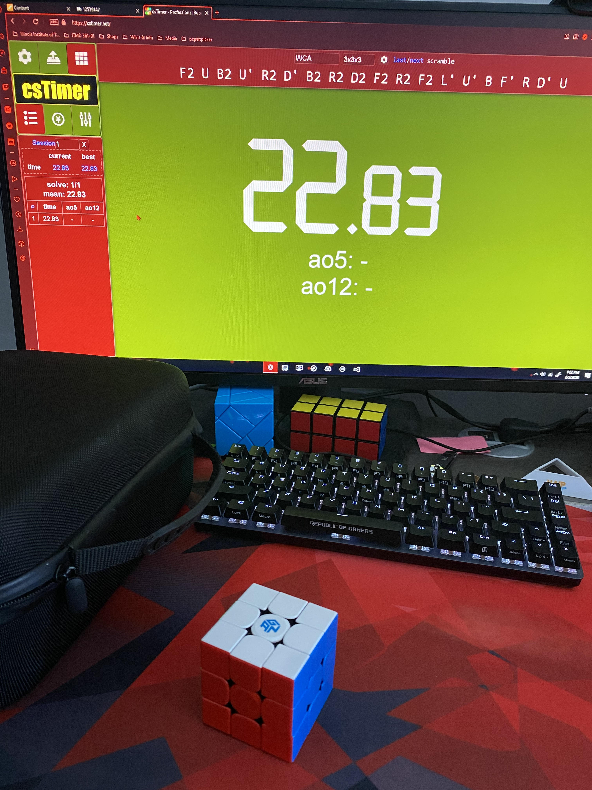

- Things I do to pass time.
This is my most frequented hobby by far.
Here's my top 10 favorites:
Occasionally whenever I am bored I test myself by solving a normal 3x3 rubik's cube as fast as I can.
I recently recorded my average out of 5 solves as well as my fastest time. I'm not that great at speedcubing but not too bad either.